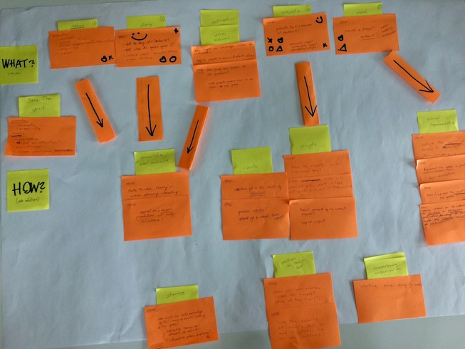
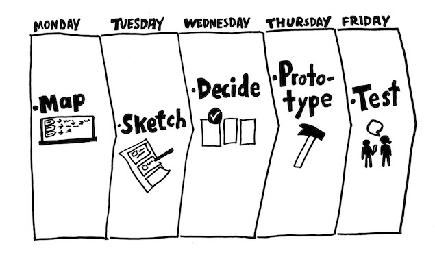

Aarhus K
back- Basic Design Principles
- Sprint Development Method
- Google Maps API
- Semantic HTML
- SEO
How can you save the genius loci of your favourite place? With a website! Aarhus K is a creative district full of alternative people and culture, and it needs to be preserved.
Our mission was to share the story of this amazing place and invite public to engage.
Discovering
At the begging we had no idea what will our final output look like. So, we went down in the area, doing observations and interviewing many people, such as project manager of Institute for X, users of the space as well as the passersby.
There research helped us to uncover specific issues regarding the area. There was a communication gap between the users (e.g. café owner) and the visitors of the space (their customers). Furthermore, there weren’t many information available about the area itself. People were interested to know more, but they couldn’t.
This was an eye-opening moment for me. Before, I never thought that research could be so valuable. It was amazing to see how different pieces of information puzzle into a one big image of the problem.
Creating
We used the sprint development method, which divided the work into five stages (days): mapping, sketching, deciding, prototyping and testing. This method emphasises on open brainstorming and generating ideas, as well as testing the final prototype or make sure it works for its designed purpose.
Following a precise time schedule, we are able to get the work done on time and avoid excessive time pressure.
Evaluating
I think that this project really helped me to fully understand the importance of testing. While using the sprint method, we had to deliver a product in a very limited time, and of course there wasn’t space to think of every possible detail. Testing turned out to be the perfect way to quickly uncover the critical problems, and get ideas for further improvement.

I tried to stay attentive to critique, too. The most important part of the learning process is to understand our own mistakes and learn form them.